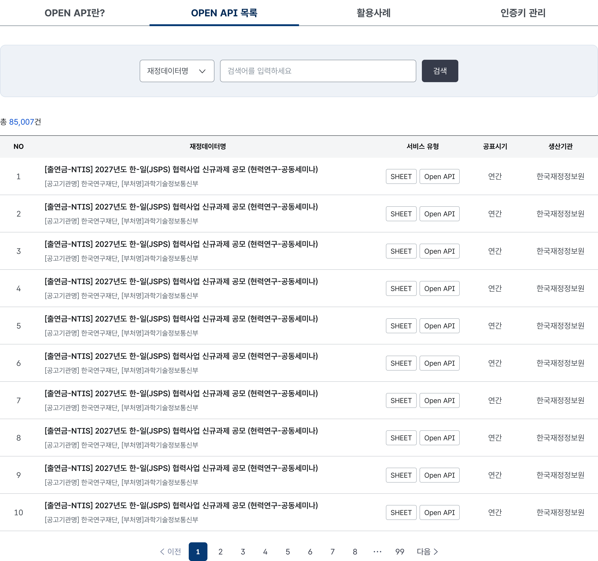
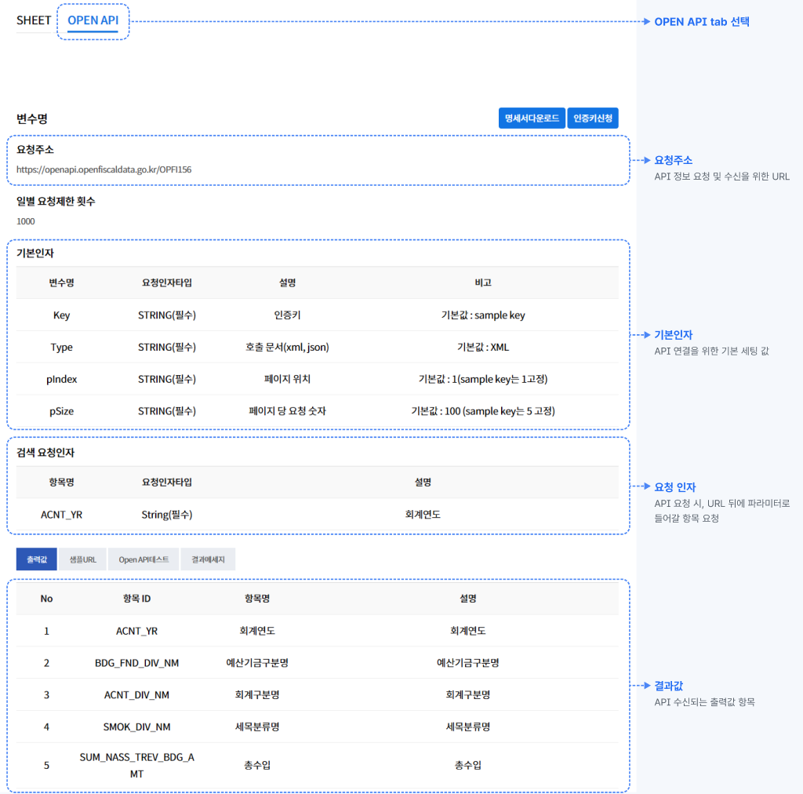

OPEN API
모두의재정은 Open API 제공으로 디지털플랫폼정부 서비스를 실현합니다.
재정수입구조, 국세수입추이, 조세부담률 및 국민부담률 추이 등 약 150개의 재정데이터를 별도 인증키 신청 없이 바로 제공받으실 수 있습니다. 통계 웹사이트 구축, DB 연동, 모바일 앱 개발 등 원하는 서비스에 자유롭게 활용해 보세요.
* 기존에 발급받은 인증키는 계속 이용할 수 있습니다.
정부 지원사업 범위
-
다양한 재정정보 제공
재정수입구조, 국세수입추이 등 약 150개의
데이터를 Open API로 만나보실 수 있습니다. -
자유로운 서비스 개발
웹사이트 구축, DB 연동, 모바일 앱 개발 등에
편리하게 활용할 수 있습니다.
제공 데이터 유형
-
재정 수입구조
연도별 국가의 본예산 총수입 구성을 확인할 수 있습니다.
(예: 국세, 지방세, 기타 수입 등) -
국세수입 추이
내국세, 관세 등 세입의 변화 추이를
살펴볼 수 있습니다. -
재정사업별 예산 시계열
연도별 재정 사업의 예산 배정정보를
제공합니다. -
재정산업 집행실적
예산 대비 집행된 금액 데이터를
제공합니다. -
민간투자사업 현황
민간투자 형태 사업의 종류와 규모 등
현황 정보를 제공합니다. -
경제통계지표 / 국제비교통계
한국은행, 통계청 등의 일반 경제 지표와 IMF·OECD 등
국제 지표 비교 데이터를 제공합니다.
서비스 이용방법
별도의 인증키 발급키 없이, OPEN API 목록에서 제공 중인 데이터를 바로 확인할 수 있습니다.

OPEN API 탭에서 요청주소, 기본인자, 요청인자를 한눈에 확인할 수 있습니다.

샘플 URL, Open API 테스트, 결과 메시지 탭에서 요청 결과를 바로 확인할 수 있습니다.
발급받은 인증키와 제시된 요청주소 뒷부분에 검색요청인자 파라미터로 삽입하여 API 통신 기본 구성을 세팅합니다.